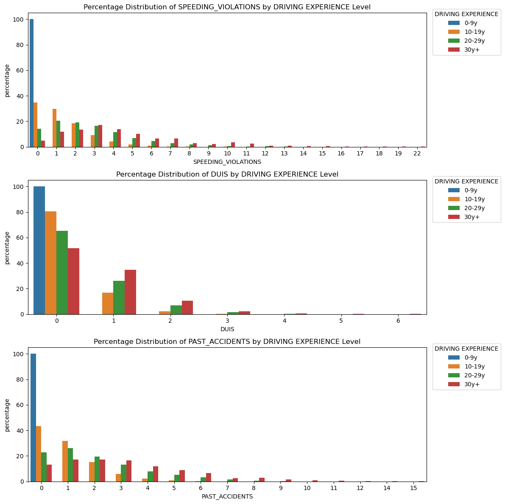
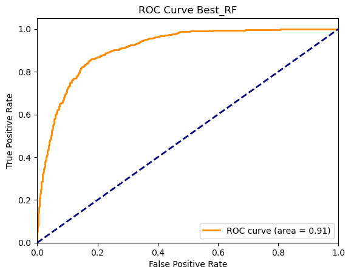
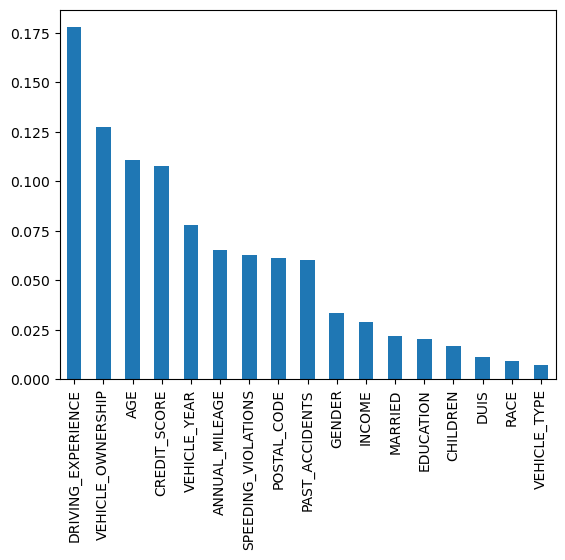

Predicting car-insurance claims
An individual assignment for the Data Science course (Profs. Alessio Martino and Irene Cannistraci): given a year of policy data, predict whether a customer will make a claim.
- Course
- Data Science, Profs. A. Martino & I. Cannistraci
- Type
- Individual assignment
- Date
- December 2023 – January 2024
- Data
- 10,000 policies × 19 variables, 31% claims
- Stack
- Python, pandas, scikit-learn, seaborn, GeoPandas
Data
10,000 customers with demographics (age band, gender, education, income), credit score, vehicle details, annual mileage, driving history (speeding violations, DUIs, past accidents) and the outcome: whether they claimed during the year. 31% did.
The strongest correlations with claiming are negative: owning the vehicle (−0.38), credit score (−0.33), being married (−0.26) and having children (−0.23).
Something odd in the data

All 3,530 drivers with fewer than ten years of experience have zero speeding violations, zero DUIs and zero past accidents. That is not plausible for real new drivers; it looks like a generation or extraction artefact. I kept the rows, since the task was fixed, but flagged it: any model trained on this data will learn that inexperience is safe.
Missing values
Credit score (982 missing) and annual mileage (957 missing) needed imputing. Mean and median imputation produced visible spikes in the distributions, so I used a 5-nearest-neighbour imputer, which preserves their shape.
Model
Categorical variables were label-encoded and the data split 75/25 (2,500 test policies). I trained a random forest, then tuned the number of trees and the depth with a randomised search under 5-fold cross-validation (best: 208 trees, depth 11).
| Random forest | Accuracy | Precision | Recall | AUC |
|---|---|---|---|---|
| Default parameters | 0.841 | 0.738 | 0.728 | 0.90 |
| Tuned | 0.848 | 0.745 | 0.749 | 0.91 |
Tuning mainly helped recall: missed claims fell from 204 to 188 of 750 while false alarms stayed flat (194 → 192).


Driving experience is the most important feature, which given the anomaly above should be read with caution.
What I would do next
- Compare against simpler, interpretable baselines such as logistic regression, which an insurer would need for pricing decisions anyway.
- Use one-hot rather than label encoding for nominal variables, and choose the decision threshold from the relative cost of a missed claim and a false alarm.
- Find out where the young-driver anomaly comes from before trusting the model on that segment.